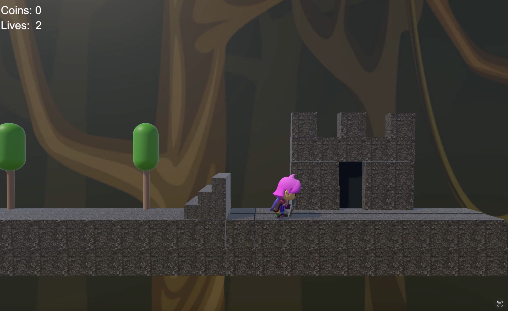
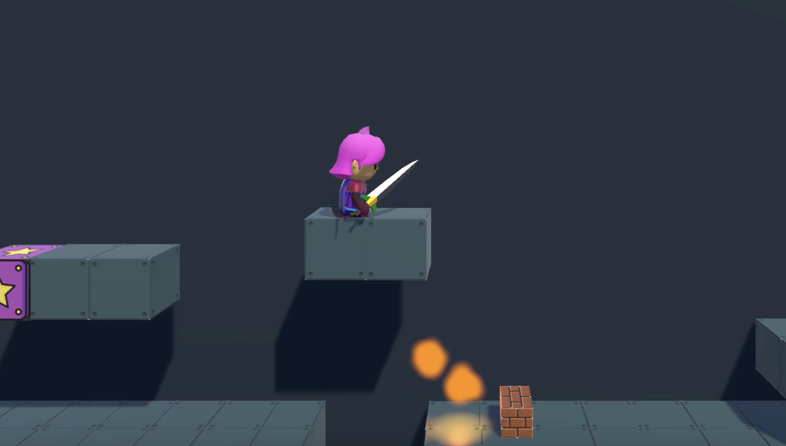
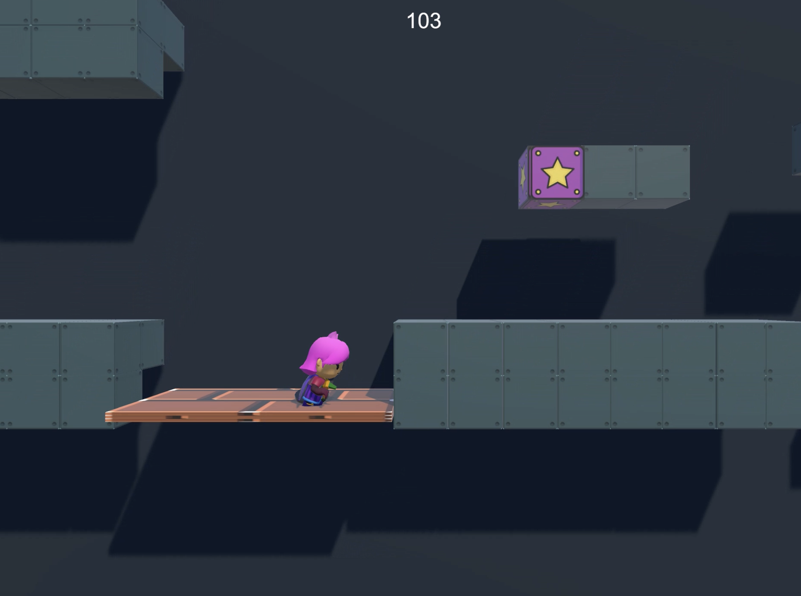
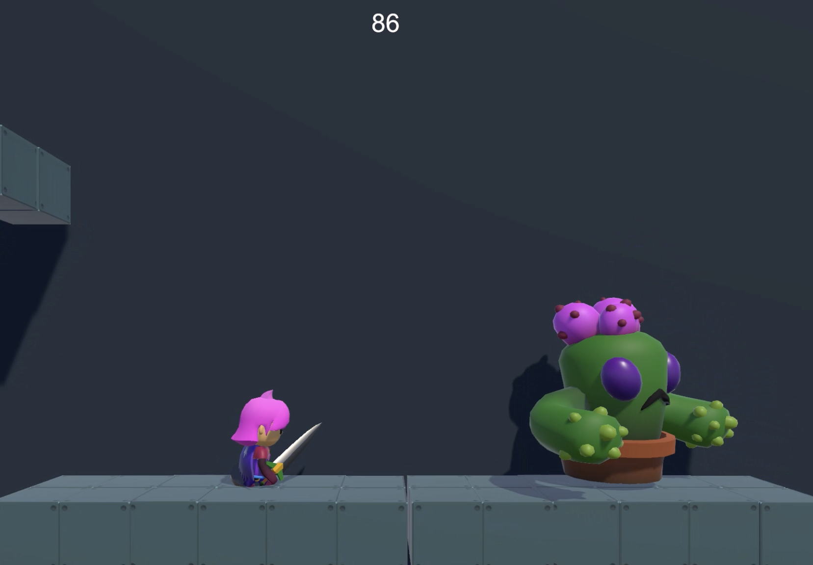
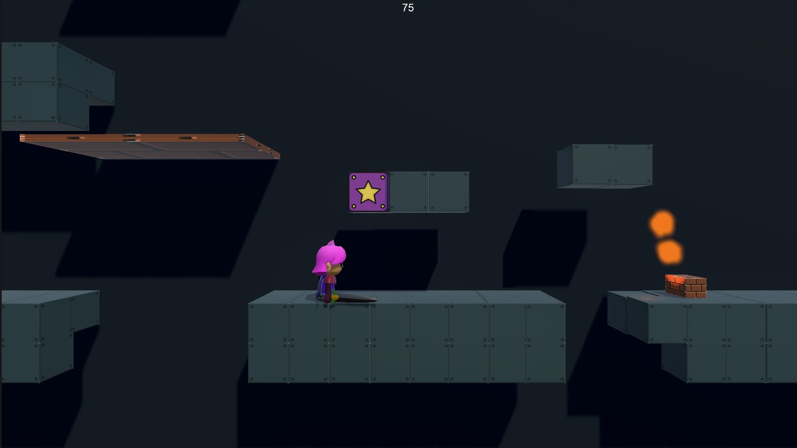
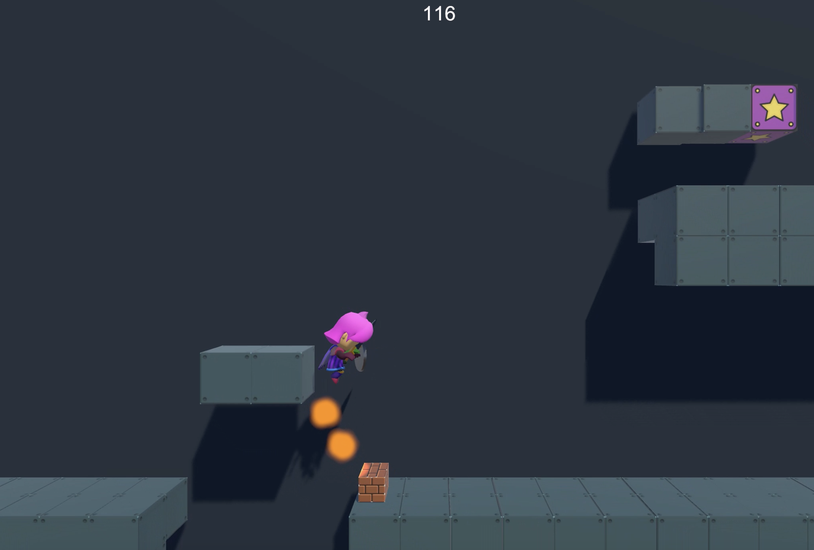

Overview
Wild Quest is a 3D side-scrolling platformer developed independently in Unity. The game follows a warrior who must escape captivity and find his way home — a journey told through escalating levels, each raising the environmental complexity and mechanical demand on the player.
Inspired by the tight controls of Super Mario and the rhythm-based platforming of Rayman Legends, Wild Quest prioritises responsive movement, readable level layouts, and a sense of momentum that rewards skilled play. The project was designed and shipped end-to-end by a single developer, covering every discipline from systems programming and physics tuning to UI design and audio integration.
Development Process
Game Design
Development began with a design document that defined the player fantasy ("escape and return"), core verbs (run, jump, dodge, progress), and a difficulty curve spread across five levels. Mechanic introductions were staggered so each level taught one new concept before the next layered on complexity — a structure borrowed from established game design pedagogy and adapted to the project's short runtime.
Environment & Level Design
Each environment was blocked out in Unity's scene editor before any assets were committed, allowing rapid iteration on spatial flow and obstacle pacing. Environmental storytelling guided the art direction: early levels use confined, industrial geometry to reinforce the captivity narrative, while later levels open into wider, naturalistic spaces that mirror the protagonist's growing freedom. Blender was used to produce custom environmental meshes where Unity's primitive geometry was insufficient.
Programming & Systems
All gameplay logic was written in C# using Unity's MonoBehaviour and component architecture. The character controller was built from scratch on top of Unity's Physics System rather than the built-in Character Controller component, enabling precise tuning of jump arc, air control, and ground-detection behaviour. A state-machine pattern governed player states (idle, running, jumping, falling, dead), keeping logic modular and debuggable. A lightweight scene-management system handled level loading, checkpoint persistence, and win/lose state transitions.
UI/UX Design
The HUD was designed for minimal cognitive overhead — health, progress, and collectible counts are surfaced through iconographic elements rather than dense text. Menus were built with Unity UI Toolkit, applying a consistent visual language across the main menu, pause screen, and level-complete flow. Transitions between UI states use short easing animations to preserve spatial context and reduce disorientation.
Key Features
- Custom Character Controller Rigidbody-based movement system with tuned gravity multipliers, coyote-time, and jump-buffering for a responsive, forgiving feel.
- Multi-Level Progression Five hand-crafted levels with distinct environments, staged mechanic introductions, and an escalating difficulty curve.
- Obstacle & Hazard Systems Modular hazard components — moving platforms, triggered traps, and environmental obstacles — built to be reusable and configurable per level.
- Checkpoint & State Persistence Mid-level checkpoints preserve player progress across deaths; a scene-management system handles transitions cleanly without data loss.
- Polished UI/UX Full HUD, main menu, pause screen, and level-complete flow built in Unity UI Toolkit with smooth animated transitions.
- Animation Integration Animator Controller with blend trees for locomotion states and trigger-based transitions for combat and interaction animations.
- Spatial Audio Positional audio cues for environment and character feedback, with background music managed through a persistent AudioManager singleton.
- Environmental Storytelling Level art and geometry crafted to reinforce the escape narrative — environment design and game design working in unison.
Technical Challenges & Solutions
-
01
Character Movement That Feels Good
Problem: Unity's default Character Controller produced floaty jumps and imprecise landing detection that undermined player trust in the controls.
Solution: Replaced it with a custom Rigidbody solution — adding a gravity multiplier that increases once the apex is passed, coyote-time to forgive late jumps off ledge edges, and a jump buffer that queues input for a few frames before landing. The result is movement that feels intentional and tight without being punishing.
-
02
Reliable Collision Detection at Speed
Problem: Fast-moving hazards and the player's sprint state caused tunnelling artefacts where physics objects passed through thin geometry.
Solution: Switched the player's Rigidbody to Continuous Collision Detection and configured collision layer matrices to reduce unnecessary broad-phase checks — resolving the tunnelling while keeping physics overhead manageable.
-
03
Difficulty Curve Calibration
Problem: Playtesting exposed uneven difficulty spikes — Level 3 was significantly harder than the levels around it.
Solution: Introduced a per-level design audit checklist tracking obstacle density, required jump precision, and enemy count per minute. Used those metrics to redistribute challenge more consistently across the full progression arc.
-
04
Level Progression & Scene Management
Problem: Managing state across scene loads — preserving checkpoint data and carrying score through transitions — proved fragile with per-scene objects.
Solution: A persistent GameManager singleton using
DontDestroyOnLoad, combined with a ScriptableObject-based data layer for player state, produced a clean separation between transient scene data and persistent session data. -
05
Animation State Conflicts
Problem: Blend tree transitions between idle, run, and jump states produced visual glitches when inputs changed faster than transitions could complete.
Solution: Restructured the Animator Controller to use sub-state machines with explicit exit conditions, and added input debouncing in the controller script — eliminating the artefacts entirely.
Skills Demonstrated
Technical
- C# programming — state machines, singletons, ScriptableObjects, component architecture
- Unity Physics System — Rigidbody dynamics, collision layers, CCD configuration
- Unity Animation System — Animator Controller, blend trees, sub-state machines
- Unity UI Toolkit — layout authoring, event binding, transition animation
- Scene management — additive loading, persistent managers, session state
- Audio integration — positional audio, AudioManager singleton, music looping
- 3D asset pipeline — Blender modelling, Unity import, material setup
- Debugging & profiling — Unity Profiler, Physics Debugger, systematic playtesting
Design
- Game design documentation — mechanic definitions, difficulty curves, player flow
- Level design — blockout-first workflow, spatial pacing, environmental storytelling
- UX design — HUD information hierarchy, menu flow, transition design
- Playtesting methodology — structured test sessions, data-driven iteration
- Solo end-to-end production — scoping, prioritisation, and delivery without a team
Key Takeaways
-
01
Feel before features.
The single highest-leverage investment was the character controller. Time spent on jump arc, gravity tuning, and input forgiveness — before any content was built — meant every subsequent design decision sat on a responsive foundation. Game feel is infrastructure.
-
02
Architecture decisions compound.
Choosing a ScriptableObject-based state layer early prevented cascading bugs during level transitions. Clean data boundaries save disproportionate time in later stages of development.
-
03
Playtesting exposes what design docs cannot.
The difficulty spike in Level 3 was invisible on paper and obvious after one external playtest. Building structured test checkpoints into the schedule — not treating testing as a final-phase activity — is the difference between a designed difficulty curve and an accidental one.
-
04
Constraint sharpens scope.
Developing solo forced rigorous prioritisation. Features that could not be justified against the core loop were cut early, which kept the project finishable and the shipped experience coherent.
-
05
Design and engineering are the same conversation.
Owning both disciplines simultaneously meant design problems could be solved at the code level and engineering decisions could be evaluated against player experience — a feedback loop that would have been slower with a hand-off between two people.
Gallery
In-engine screenshots across levels, UI states, and environment highlights.

Level 1 — Captivity environment

Character controller — jump arc

Level 3 — Moving platforms

In-game HUD

Main menu — UI design

Level 5 — Final environment